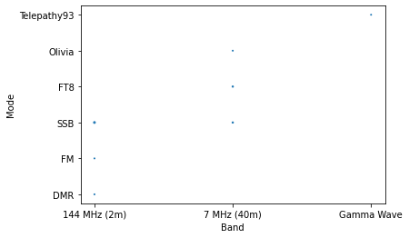
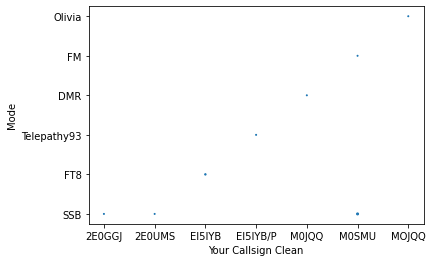

Contents
import ctyparser
import gspread as gs
import matplotlib
import os
import pandas as pd
import re
from ipyleaflet import Map, basemaps, basemap_to_tiles
if os.environ.get('NETLIFY'):
credentialkeys = ['type', 'project_id', 'private_key_id', 'private_key', 'client_email',
'client_id', 'auth_url', 'token_uri', 'auth_provider_x509_cert_url', 'client_x509_cert_url']
credentials = {}
for key in credentialkeys:
credentials['key'] = os.environ.get(key)
gc = gs.service_account_from_dict(credentials)
sh = gc.open_by_url('https://docs.google.com/spreadsheets/d/1dpciJGykIvwxHWgWrw_KTVi10EisyUZ6cah962oaStI/edit?usp=sharing')
ws = sh.worksheet('Form responses 1')
else:
gc = gs.service_account(filename='../workedalloarc-72453018052d.json')
sh = gc.open_by_url('https://docs.google.com/spreadsheets/d/1dpciJGykIvwxHWgWrw_KTVi10EisyUZ6cah962oaStI/edit?usp=sharing')
ws = sh.worksheet('Form responses 1')
df = pd.DataFrame(ws.get_all_records())
df.head(10)
| Timestamp | QSO Datetime (UTC) | Your Callsign | Their Callsign | Band | Mode | Locator Sent | Locator Received | SOTA / IOAT / Sat / Network information | Innovation | Any other details | |
|---|---|---|---|---|---|---|---|---|---|---|---|
| 0 | 26/04/2022 20:34:04 | 27/04/2022 12:23:00 | M0SMU | M7SMU | 144 MHz (2m) | FM | IO81oj | IO81ql | EU-005 | Not innovative at all | test |
| 1 | 26/04/2022 20:34:35 | 19/04/2022 09:00:00 | M0SMU | 2E0UMS | 7 MHz (40m) | SSB | |||||
| 2 | 26/04/2022 20:37:12 | 24/04/2021 11:00:00 | 2e0ggj | m0nvk | 7 MHz (40m) | SSB | io95fb | m0nvk home qth | Ran one or two full courses :-) | Am a good egg ! | |
| 3 | 26/04/2022 20:39:58 | 20/03/2022 19:31:00 | mojqq | m0lte | 7 MHz (40m) | Olivia | io95ec | nk | |||
| 4 | 26/04/2022 20:41:07 | 26/04/2022 15:30:00 | m0jqq | m0smu | 144 MHz (2m) | DMR | none | none | |||
| 5 | 26/04/2022 22:18:00 | 26/04/2022 22:04:00 | M0SMU | 2EØVCC/P | 144 MHz (2m) | SSB | |||||
| 6 | 27/04/2022 12:27:40 | 27/04/2022 12:24:00 | EI5IYB /P | M0SMU | Gamma Wave | Telepathy93 | IO63we | IO81oj | Brain Waves | Well... | Detailed details |
| 7 | 29/04/2022 11:28:11 | 28/04/2022 09:00:00 | 2E0UMS | M0OUK | 144 MHz (2m) | SSB | IO81oj | ||||
| 8 | 29/04/2022 23:14:57 | 28/04/2022 21:22:00 | EI5IYB | TF2MSN | 7 MHz (40m) | FT8 | |||||
| 9 | 29/04/2022 23:18:41 | 29/04/2022 22:17:00 | EI5IYB | IW9FRA | 7 MHz (40m) | FT8 | IO63 | JM68 |
# Next we clean the callsigns up and find any prefix / suffix and the DXCC
regex = re.compile('^([A-Z0-9]+[\/])?([A-Z][0-9]|[A-Z]{1,2}|[0-9][A-Z])([0-9]|[0-9]+)([A-Z]+)([\/][A-Z0-9]+)?')
df['Your Callsign Clean'] = df['Your Callsign'].str.upper().str.replace(' ', '').str.replace('Ø', '0')
df['Your DXCC'] = df['Your Callsign Clean'].str.extract(regex, expand=True)[1]
df['Your Prefix'] = df['Your Callsign Clean'].str.extract(regex, expand=True)[0]
df['Your Suffix'] = df['Your Callsign Clean'].str.extract(regex, expand=True)[4]
df['Their Callsign Clean'] = df['Their Callsign'].str.upper().str.replace(' ', '').str.replace('Ø', '0')
df['Their DXCC'] = df['Their Callsign Clean'].str.extract(regex, expand=True)[1]
df['Their Prefix'] = df['Their Callsign Clean'].str.extract(regex, expand=True)[0]
df['Their Suffix'] = df['Their Callsign Clean'].str.extract(regex, expand=True)[4]
df.head(10)
| Timestamp | QSO Datetime (UTC) | Your Callsign | Their Callsign | Band | Mode | Locator Sent | Locator Received | SOTA / IOAT / Sat / Network information | Innovation | Any other details | Your Callsign Clean | Your DXCC | Your Prefix | Your Suffix | Their Callsign Clean | Their DXCC | Their Prefix | Their Suffix | |
|---|---|---|---|---|---|---|---|---|---|---|---|---|---|---|---|---|---|---|---|
| 0 | 26/04/2022 20:34:04 | 27/04/2022 12:23:00 | M0SMU | M7SMU | 144 MHz (2m) | FM | IO81oj | IO81ql | EU-005 | Not innovative at all | test | M0SMU | M | NaN | NaN | M7SMU | M | NaN | NaN |
| 1 | 26/04/2022 20:34:35 | 19/04/2022 09:00:00 | M0SMU | 2E0UMS | 7 MHz (40m) | SSB | M0SMU | M | NaN | NaN | 2E0UMS | 2E | NaN | NaN | |||||
| 2 | 26/04/2022 20:37:12 | 24/04/2021 11:00:00 | 2e0ggj | m0nvk | 7 MHz (40m) | SSB | io95fb | m0nvk home qth | Ran one or two full courses :-) | Am a good egg ! | 2E0GGJ | 2E | NaN | NaN | M0NVK | M | NaN | NaN | |
| 3 | 26/04/2022 20:39:58 | 20/03/2022 19:31:00 | mojqq | m0lte | 7 MHz (40m) | Olivia | io95ec | nk | MOJQQ | NaN | NaN | NaN | M0LTE | M | NaN | NaN | |||
| 4 | 26/04/2022 20:41:07 | 26/04/2022 15:30:00 | m0jqq | m0smu | 144 MHz (2m) | DMR | none | none | M0JQQ | M | NaN | NaN | M0SMU | M | NaN | NaN | |||
| 5 | 26/04/2022 22:18:00 | 26/04/2022 22:04:00 | M0SMU | 2EØVCC/P | 144 MHz (2m) | SSB | M0SMU | M | NaN | NaN | 2E0VCC/P | 2E | NaN | /P | |||||
| 6 | 27/04/2022 12:27:40 | 27/04/2022 12:24:00 | EI5IYB /P | M0SMU | Gamma Wave | Telepathy93 | IO63we | IO81oj | Brain Waves | Well... | Detailed details | EI5IYB/P | EI | NaN | /P | M0SMU | M | NaN | NaN |
| 7 | 29/04/2022 11:28:11 | 28/04/2022 09:00:00 | 2E0UMS | M0OUK | 144 MHz (2m) | SSB | IO81oj | 2E0UMS | 2E | NaN | NaN | M0OUK | M | NaN | NaN | ||||
| 8 | 29/04/2022 23:14:57 | 28/04/2022 21:22:00 | EI5IYB | TF2MSN | 7 MHz (40m) | FT8 | EI5IYB | EI | NaN | NaN | TF2MSN | TF | NaN | NaN | |||||
| 9 | 29/04/2022 23:18:41 | 29/04/2022 22:17:00 | EI5IYB | IW9FRA | 7 MHz (40m) | FT8 | IO63 | JM68 | EI5IYB | EI | NaN | NaN | IW9FRA | IW | NaN | NaN |
# Check the DXCC is valid
cty = ctyparser.BigCty()
cty.import_dat('cty.dat')
#df['Valid Your DXCC'] = df['Your DXCC'].isin(cty.keys())
#df['Valid Their DXCC'] = df['Their DXCC'].isin(cty.keys())
#print(cty['VK'])
#dxccs = {}
#for dx in cty.items():
# dxccs[dx[0]] = dx[1]['entity']
#df['Full Your DXCC'] = df['Your DXCC'].map(dxccs)
#df['Full Their DXCC'] = df['Their DXCC'].map(dxccs)
#df.head(10)
#print(cty['IW9'])
search_key = 'IW9AAB'
for idx in range(len(search_key)):
if idx == 0:
short_key = search_key
else:
short_key = search_key[:-(idx)]
print(short_key)
res = [val for key, val in cty.items() if short_key in key]
if res != []:
a_key = 'entity'
values_of_key = [a_dict[a_key] for a_dict in res]
break
print(values_of_key)
IW9AAB
IW9AA
IW9A
IW9
['Italy', 'Sicily (not DXCC)']
bandplot = df['Band'].value_counts().plot(kind = 'bar')
bandplot.set_title('QSOs by Band')
bandplot.set_xlabel('Count')
bandplot.set_ylabel('Band')
Text(0, 0.5, 'Band')
modeplot = df['Mode'].value_counts().plot(kind = 'bar')
modeplot.set_title('QSOs by Mode')
modeplot.set_xlabel('Count')
modeplot.set_ylabel('Mode')
Text(0, 0.5, 'Mode')
callplot = df['Your Callsign Clean'].value_counts().plot(kind = 'bar')
callplot.set_title('QSOs by Callsign')
callplot.set_xlabel('Count')
callplot.set_ylabel('Callsign')
Text(0, 0.5, 'Callsign')
bandmodeplot = df.groupby(['Band','Mode']).size().reset_index(name='count').plot.scatter(x='Band', y='Mode', s='count')

callsignmodeplot = df.groupby(['Your Callsign Clean','Mode']).size().reset_index(name='count').plot.scatter(x='Your Callsign Clean', y='Mode', s='count')

m = Map(
basemap=basemap_to_tiles(basemaps.OpenStreetMap.Mapnik),
center=(48.204, 350.121),
zoom=3
)
m